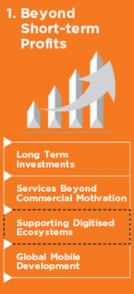

Back
Back
- Download Full Report
- Annual Report 2014
- Annual Report 2014
- Financial Statements
- AGM Information
- Download By Chapter
- At A Glance
- Shaping The Future
- Financial Performance
- Corporate Profile
- Investment Performance
- Operating Companies Business Review
- New Business Units
- Corporate Responsibility
- Other Information
- Instructions

About
The Report
We published our first Sustainability Report according to the Global Reporting Initiative (GRI – G4) guidelines in 2013. The 2013 report titled ‘Our Commitment to Development’ explained Axiata’s approach to promoting sustainability within the Group’s. This year’s Sustainability Report, ‘Our Commitment to Development: Building Digital Ecosystems’ continues the narrative from 2013.
Our industry has moved from facilitating voice and short messaging services to a dynamic new digital platform where the services we support empower communities in which we operate. This report discusses the approach followed by the Group to create sustainable digital ecosystems within the each of our four sustainability pillars.
In this year’s report, we discuss our journey towards creating sustainable digital ecosystems by examining four key aspects: the improvements we have engineered; the innovations we have unleashed; the investments we have made; and the impacts we have had.
This report will disclose the developments in each of the pillars in four different aspects. They are

• Improvements made to projects disclosed last year
• Innovations & new projects introduced this year
• Investments made for significant projects
• Impact of the key programmes and their developments from a socio economic
Notes:
Forward Looking Statements
This report contains forward-looking statements characterised by the use of words and phrases such as “might” “forecast” “anticipate”, “project”, “may”, “believe”, “predict”, “expect”, “continue”, “will”, “estimate”, “target,” and other similar expressions. Our business operates in an ever-changing macro environment. As such, our business is subject to uncertainties that could cause actual results to differ from those reflected in the forward-looking statements. Such statements reflect the expectations of the Group and may or may not turn out as predicted.
Changes from Previous Report
Our 2013 report scope did not include the passive infrastructure of our operations currently managed by edotco, covering a network of over 13,000 sites in Malaysia, Bangladesh, Cambodia and Sri Lanka. This report, however includes and discusses the impact of these operations and discloses sustainable measures taken currently within edotco as well.
WE CONTINUES
SHARPING
THE EDGE
President & Group Chief Executive Officer’s Statement
RM202.5
million revenue
Last year Axiata took further steps to enable sophisticated digital ecosystems for our 260 million customers. Our rural footprint grew as we expanded network coverage to X% and made connectivity more affordable to diverse social segments. We have facilitated access to state-of-the-art digital technology through low cost and high-end devices brought forth by our world class talent pool of 29,000 people across the region.
This report focuses on Axiata’s four sustainability pillars: ‘Beyond Short-Term Profits’; ‘Nurturing Our People’; ‘Inculcating Process Excellence’; and ‘Responsibility to Planet and Society’, report examines each of these four pillars and reports on how the Group has been adding value in each of these areas.
BEYOND SHORT TERM PROFITS
Our Commitment to Long Term Investment
Across our Network, we have invested RM4 billion in capital expenditure last year, increasing connectivity, enhancing reliability, and facilitating access. We are the leader in introducing new technology to our markets. Last year, we became the first operator to introduce LTE to Cambodia and the first 3G enabled operator in Bangladesh. We ensure that new technology and connectivity is not only limited to the urban areas in our footprint. XXX towers constituting xx% are currently positioned in the most remote areas of our OpCo countries.
Our Commitment to Services beyond Commercial Motivation
Our Commitment to Supporting Digital Ecosystems
Our Commitment to Global Mobile Development
NURTURING OUR PEOPLE
Our Commitment to Nurturing Future Leaders
In 2014 we conducted the first ever ‘Axiata Champions’ programme. Fifty of the top performers across the Group were given the opportunity to interact and learn from the leaders in the industry. This was in recognition of the exceptional performance of these key contributors. The Axiata Champions was also an event marking the establishment of our core values, uncompromising integrity and exceptional performance, across the group.
The Axiata Young Talent Programme (AYTP) has evolved into trailblazing initiative. We have invested RM100 million in this initiative and it has attracted more than 14,000 applicants in 2014 alone. In Indonesia, the programme is known as the XL Future Leaders programme and has benefitted more than 400 young people so far.
INCULCATING PROCESS EXCELLENCE
Our Commitment to Strong Governance and Supply Chain Management Best Practice
In 2014 we paid particular attention to improving our relationships with our suppliers. Suppliers are an integral part of every business operation and help shape innovative products and customer satisfaction. Our engagements with our suppliers have focused on ensuring that their processes are in line with the Axiata values on sustainability. We will continue to engage with them and support them in the integration of best practices in their operations. In 2014 we launched the Axiata Supplier Forum. We intend to use this as our main conduit to engage our suppliers on best practices. We will regularly streamline the processes of this forum to ensure transparency, participation and efficient outputs. In Malaysia, more than 50% of our CAPEX is spent on procurement from local vendors.
Our Commitment to Digitisation
As we embark on this journey, we have started to reflect this process in this year’s sustainability report as well as our annual report now available on digital applications. Last year more than 6,000 readers accessed our Annual and Sustainability reports using the digital application and the web version, which is almost twice the number of hard copies printed. By the end of 2015 XX% of our processes will be available digitally. We will start this process internally with the employee communication platform ‘Prism’ which will enable group-wide communication and networking on a digital platform.
serving over
260
million
people
RESPONSIBILITY TO PLANET AND SOCIETY
Our Commitment to Greener Operations
‘edotco’, our infrastructure company was launched in 2013 with a view to creating greener digital networks. One of ‘edotco’s’ goals is to reduce carbon emissions by 40% by 2018. Last year we learnt immensely how we could achieve this goal. Whilst this is a very challenging and aspirational goal, we currently have X concurrent projects and field trials ongoing with a view to achieving this.
One of these initiatives has already enabled us to manage key operations of some of our towers remotely. We have established the ‘Echo Centre’ in Malaysia which looks into managing rural sites including tasks such as regulating power consumption, managing cabin temperature, and measuring fuel and battery capacity. We plan to establish this system across the Group in the coming years. Along with edotco’s green mandate, XXX towers of our network are currently run by renewable energy sources.
Our Commitment to Society
Our Commitment to Disaster Preparedness
In Malaysia Celcom in re-established its network in a matter of XX hours after the recent floods in East Malaysia. A sum of RM1.2 million was spent to ensure that customers had adequate support after the disaster. In Sri Lanka, Dialog’s DEWN project has set a new benchmark for disaster preparedness.
Our 2013 Sustainability Report was our first attempt to benchmark our operations against world class reporting standards indicating our commitment to development. Over the past year we have developed our reporting process while encouraging our OpCos to publish standalone reports for their respective markets.
This is our second report produced in accordance with the Global Reporting Initiative (GRI) guidelines, where we discuss our management approach to sustainability and document the achievements of our Group over the past year. Axiata remains committed to enhancing its sustainability processes, to delivering high value to its customers and other stakeholders, and to Advancing Asia. We will pursue these goals with undiluted commitment in 2015 and beyond.
Managing Director/President
& Group Chief Executive Officer
The Management
Approach
Over the last year, three key changes were made to our central sustainability pillars. The changes are depicted in the diagram below.
